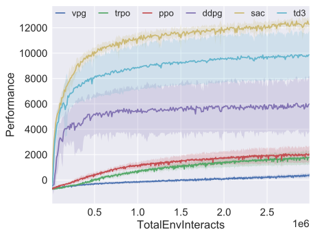

Spinning Up 算法实现的基准¶
我们在 MuJoCo Gym任务套件中的五个环境中对Spinning Up算法实现进行了基准测试： HalfCheetah，Hopper，Walker2d，Swimmer和Ant。
每个环境中的性能¶
HalfCheetah¶

HalfCheetah-2 环境的 3M 时步性能。
实验细节¶
随机种子 分别对3个随机种子每个运行同轨策略算法（VPG，TPRO，PPO）， 对随机10个种子每个运行异策略算法（DDPG，TD3，SAC）。 图表显示了训练过程中随机种子的平均（实线）和标准发展（阴影）。
性能指标 同轨策略算法的性能是通过每个回合收集的批次中的平均轨迹回报来衡量的。 通过在十条轨迹上运行没有动作噪声的确定性策略（或者在SAC的情况下为均值策略）， 并报告这些测试轨迹的平均回报，每10,000步就对异轨策略算法的性能进行一次测量。
网络结构 同轨策略算法使用大小为（64，32），带有tanh单元的网络同时用于策略和值函数。 异轨策略算法使用大小为（400，300），具有relu单元的网络。
批次大小 同轨策略上的算法每批更新收集了4000步智能体与环境的交互。异轨策略算法在每个梯度下降步骤使用大小为100的微型批次。
所有其他超参数均保留为Spinning Up实现的默认设置。有关详细信息，请参见算法页面。